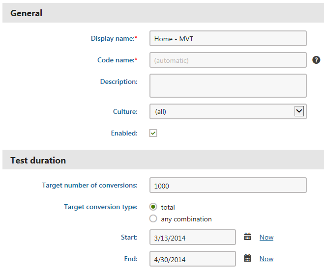
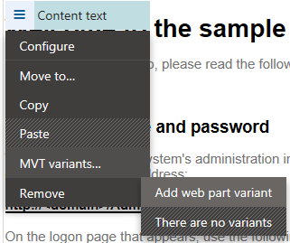
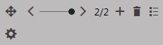
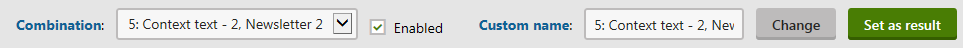

Creating MVT tests
The sections below describe the steps you need to take to set up a multivariate test on your website.
Defining MVT tests
To start optimizing a page on your website via multivariate testing, create and configure an MVT test:
Open the Pages application.
Select a page in the page tree.
Switch to the Analytics -> MVT tests tab.
Here you can find a list of all MVT tests assigned to the current page and manage them as required.
Click New MVT test and fill in the following properties:
Property
Description
Display name
The name of the MVT test displayed in the administration interface.
Code name
Sets a code name that serves as an identifier for the test. It is also used in the name of the browser cookie used to store which of the test's variant combinations was assigned to a visitor.
Description
Can be used to enter a text description for the test in order to give information about its purpose, goals etc.
Culture
Used to select which culture version(s) of the page should be included in the test.
Enabled
This check box may be selected to manually start or stop the test.
Target number of conversions
Sets the number of conversion hits that must be logged to complete the test. Once this number is reached, the MVT test automatically stops working and switches to the Finished status.
Leaving this property empty or setting it to 0 means that there will be no conversion hit limit for the test.
Target conversion type
If the total option is selected, then the Target number of conversions will be compared with the total amount of conversion hits logged for all of the test's combinations. If any combination is selected, then the test will be concluded when the specified number is reached by one combination (the one with the most conversion hits).
Start/End
Sets the time interval during which the test should occur. You can use the Calendar button (
 ) to select the exact date and time.
) to select the exact date and time.

Creating a new MVT testClick Save.
The system creates the MVT test and assigns it to the page.
Managing all MVT tests from a single location
You can use the MVT tests application to manage all tests assigned to different pages from a single location.
In the Pages application, you can manage all MVT tests defined on the current website. The only difference is that you need to assign tests to specific pages through the Page property.
Kentico EMS required
Features described on this page require the Kentico EMS license.
Creating testing variants
Once a page contains an MVT test, you can start creating the content options that you wish to evaluate. This is done by defining variants for the elements that make up the content of the page. You can use the following objects as variables:
Web parts – these variants are separate instances of the original web part. Each variant's properties may be configured differently and you can specify an alternative Web part layout.
Web part zones – zone variants may contain any type or number of child web parts as required. You can also set the basic properties of the zone differently. When you add a new variant to a zone, the content of the original is automatically copied, so you do not have to rebuild the zone from scratch if you only need to make small modifications. Creating variants for individual web parts inside zone variants is not supported.
Editor widgets – each variant is a widget of the same type as the original. You can set different values for the properties of each variant.
Users with the Design website permission for the Design module manage web parts on a page's Design tab, which provide more configuration options than editor widgets.
Multivariate testing and Content personalization
You cannot create multivariate testing variants of web parts, zones or widgets that already have variants defined for Content personalization.
To add an MVT variant to a web part or zone:
In the Pages application, open the selected page on the Design tab.
Right-click the header of the given object (or click the
 icon), hover over the MVT variants option and select Add web part variant.
icon), hover over the MVT variants option and select Add web part variant.
Adding a new web part variantFill in the following properties for the variant:
Display name – the name used in lists of MVT variants in the administration interface.
Description – can be used to enter a text description of the variant.
Enabled – indicates if the variant should be considered as a possible testing option. If you disable an MVT variant, all testing combinations that include this variant will also be disabled.
Click Save & Close.
The standard configuration dialog opens – the variant is simply another instance of the original object.
By default, the variant has the same values in its properties as are set for the original, change them as required.
Click Save & Close once you have configured the variant's properties to generate the content that you wish to test.
Each object for which testing variants are created has a slider in its header.
Switching between web part variants
This slider can be used to switch between individual variants as needed (including the original). The content specified by the current selection on the page's variant sliders is displayed in the Pages application on the Design and Page tabs, and in the Preview mode. You can also switch between different versions of the page's content by using the combination panel. If you wish to view the content of variants while cycling through the slider on the Design tab, make sure that you have the Web part content checkbox selected in the page header.
The buttons on the right of the slider allow you to:
Add new variants
Remove the currently selected variant
Open a list of all variants of the given object
At any time, you can Configure (
) the properties of the variant currently chosen on the slider.
When configuring variants, you can access the properties that affect the content on the General tab. The settings related to the MVT testing functionality of the specific variant are available on the additional Variant properties tab.
In the case of editor widgets, you can handle multivariate testing variants using a similar approach. The only difference is that you edit the widget variants on the Page tab of the Pages application. The slider and actions for variant management are located on the pop‑up menu of individual widgets.

Switching between widget variants
You can access a list of all multivariate testing variants defined on a given page, by selecting it from the content tree of the Pages application and going to Analytics -> MVT variants. The variants of all three object types are included here, and they can be removed or edited as necessary.
The following rules apply to all MVT variants:
If you delete an object from the page, the system also removes all of its multivariate testing variants.
Variants are not linked to specific MVT tests. The system stores variants on the page templates used by the given page (in the case of web parts and zones) or within the content of the page itself (editor widget variants). This allows you to use existing variants in other MVT tests performed on the given page at another time. Also keep this in mind when exporting multivariate testing scenarios to other websites. Variants are transferred along with pages or page templates, not MVT test objects.
If you Copy a web part or widget that has MVT variants, the system only transfers the original object (without variants).
Managing widget variants under workflow
MVT variants of editor widgets are NOT included within the scope of workflow. Changes made to widget variants can have an effect on the live website, and are not recorded in the page version history.
To strictly enforce the workflow publishing process, you need to prevent editors from creating widget variants — define editor roles without the Manage permission for the MVT testing module.
Setting up testing combinations
Individual testing scenarios are represented by combinations of the MVT variants created on the page. By default, all possible combinations of the page's content are included in multivariate tests, but you may perform additional configuration to fine‑tune your test as required.
Combinations can be managed for pages that have an MVT test defined via a panel located at the top of the page editing interface in the Pages application. This panel is available on both the Page and Design tabs, and in the Preview mode.

Setting up page combinations
You can choose any of the available combinations through the Combination selector. Doing so causes the page to display the content defined by the variants that make up the given combination. The selection made through the combination panel is linked with the positions set on the MVT sliders of variable objects on the page. If you switch to a different variant through an object's slider, the current combination also changes accordingly and vice versa.
Pages with several variants for multiple objects have a large number of possible combinations. For this reason, it is recommended to carefully choose which combinations should be included in the page's MVT test. You can include or exclude a combination by selecting the Enabled check box located on the panel next to the selector. There is a close relationship between the status of a combination and its variants. If you disable a variant through its properties, all combinations that include the variant also become disabled. If a disabled combination is enabled at a later point, the system automatically enables all of its variants.
A good way to evaluate potential combinations is to check them in the Preview mode of the Pages application, and disable those where the variants clash visually, have conflicting logic or are otherwise incompatible. We recommend leaving the Default page combination enabled, so you can compare any improvements with the baseline statistics of the original page.
Another best practice is to set a descriptive custom name for each active combination,so that you can easily differentiate between combinations in the editing interface and identify them in the test's result reports. To do this, simply select a combination through the panel, enter the appropriate text into the Custom name field and click the Change button. The default names assigned to new combinations are composed of a number indicating their order, followed by a list of the display names of all variants that are included in the given combination.
Once the page's variants and combinations are all configured as needed, you can enable your MVT test on the Analytics -> MVT tests tab of the page. Making further modifications on the page while an MVT test is running is not recommended, since this may affect the accuracy and relevance of the measured statistics.
The Set as result action should only be used after the conclusion of the test, once you have analyzed the logged conversion data and identified the combination that provides the best results. The action allows you to easily set the winning combination as the permanent content of the page. Simply select the given combination via the combination panel, then click the button and confirm the action. This replaces the original web parts, zones and widgets with the variants included in the currently selected combination and removes all other MVT variants from the page.
Configuring conversions
You need to use conversions to track the behavior and actions of the website's visitors in order to get MVT testing results. Conversions work on a site‑wide level and are not assigned to MVT tests in any way. You only need to define conversion objects and link them with the actions that you wish to log for the test.
There are many ways to specify that an action should be logged as a conversion. For example, you can have the system log a conversion hit whenever users view a specific page:
Select the given page from the page tree of the Pages application.
Open Analytics -> Settings tab.
Use the Track conversion name property to either create a conversion via the New button, or Select an existing one.
Click Save.
When an action designated as a conversion is performed anywhere on the website, the system checks if the given user has passed through a page with a running MVT test (according to the presence of a cookie). If this is the case, the conversion hit is logged for the content combination that was assigned to the user.
Once you enable the MVT test and it starts running on the live site, you can monitor the conversion statistics for individual combinations using predefined reports.